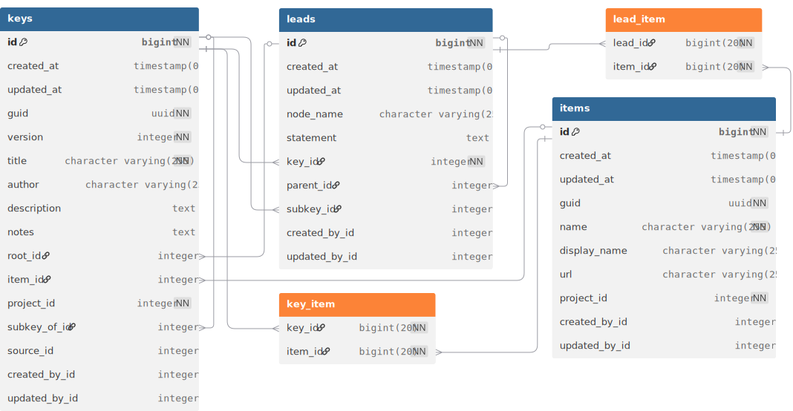
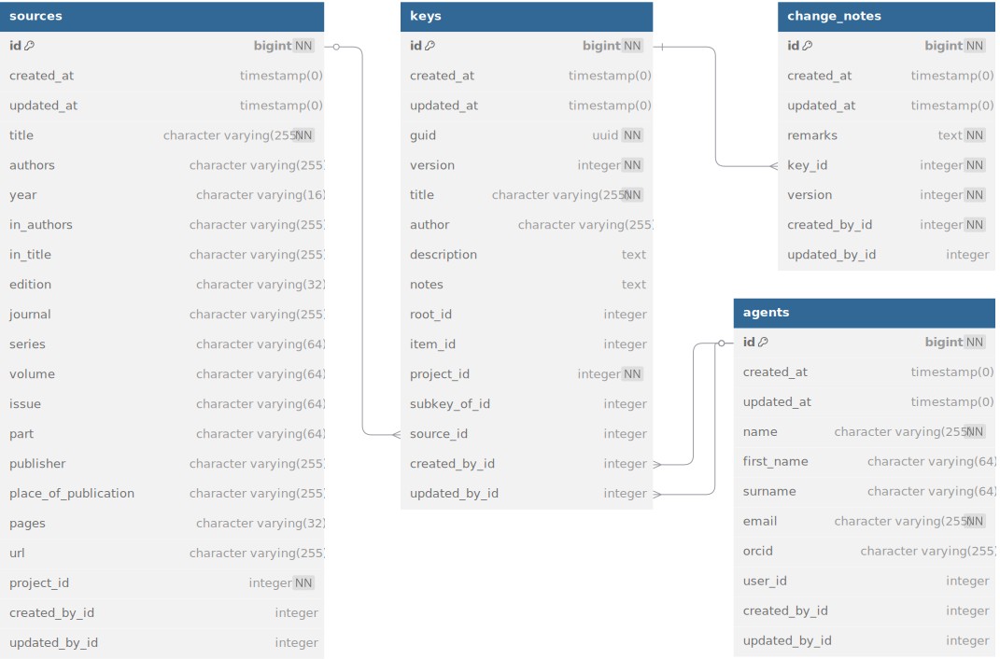
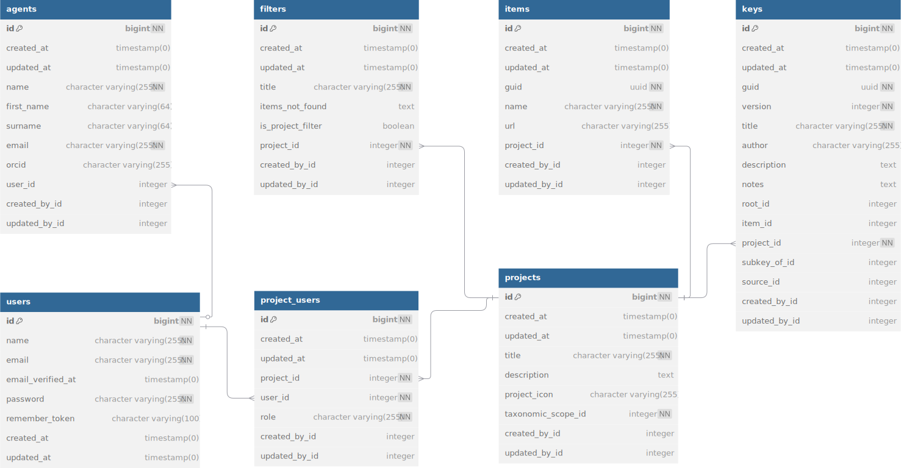
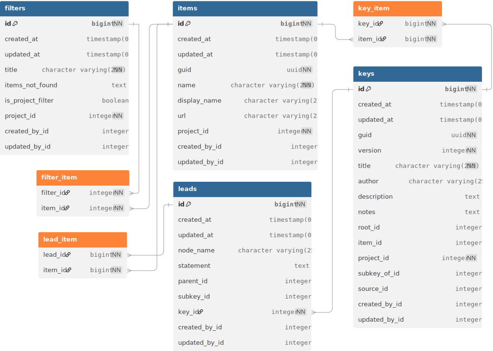
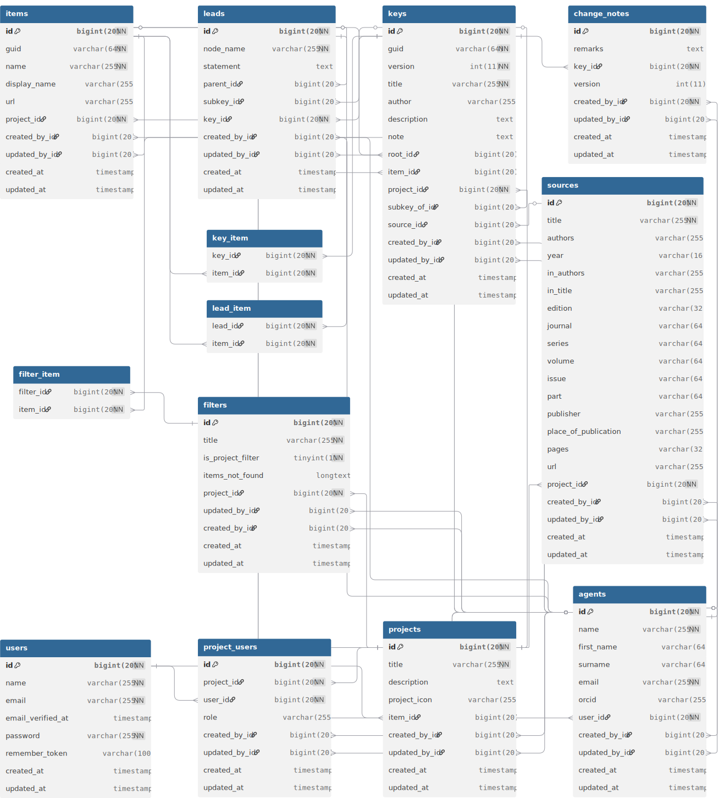

KeyBase data model
Key
Keys are the core of KeyBase. To make keys work, we need three types of resources (tables), keys, leads and items.

A key is a graph of leads, so the leads table contains an adjacency list
made up by the id and parent_id fields. The lead itself is in the
statement field.
In most cases the graph will be a tree, i.e. a graph with no cycles. KeyBase enforces this. In KeyBase, the branches of the tree are leads and the leaves are items. In principle, a lead can only lead to a single item and the old version of KeyBase enforced a many-to-one relationship between leads and items. The new version of KeyBase supports a many-to-many relationship between leads and items, so that it can store keys with parts that are not fully resolved, i.e. where a lead can lead to multiple items.
The data model also has a many-to-many relationship between keys and items. This is done with an eye on the future, when KeyBase will have its own key editor, so that items that cannot be keyed out yet (are not assigned to a lead) can be assigned to a key.
An Item can be the root of another Key. This is done in KeyBase
through the item_id and root_id fields in the keys
table. The item_id field links to the items table and the
root_id field to the leads table.
There are two types of situations where the tree structure breaks down, or where there are other types of leaves:
-
Sub-keys: Large keys are often broken down into smaller sub-keys, e.g. https://keybase.rbg.vic.gov.au/keys/show/3854. In the KeyBase data model we have the
subkey_idfield in the leads table to deal with this. When using this, we basically skip the Item and go straight to the Key.The KeyBase plugin currently does not support sub-keys, so until now people have had to make up items and have the sub-key as a key with a taxonomic scope (
item_id), but we can support it in the data model and provide a custom API endpoint for use with the KeyBase plugin until the plugin has been updated. -
Reticulations: Sometimes multiple leads lead to the same couplet, causing a cycle (or ‘reticulation’) in the graph. The KeyBase plugin does not support reticulations, so when a new key is loaded into the database KeyBase will just pretend they are not there and duplicate a branch as many times as is needed (which is what a recursive query with
UNION ALLwould do). It is possible to repair the tree structure without repeating branches by starting a new graph at a reticulation, but this will cause issues down the track. Also, reticulations are not things we like to see in keys, so it seems best not to make a feature of it. Most, if not all, reticulations in KeyBase are caused by merging sub-keys into the main key, which is not necessary anymore when KeyBase can handle sub-keys.
There are also scenarios where an Item is not a leaf but a branch (or a branch as well as a leaf):
-
Missing intermediate keys: An item that keys out in a key might have only a single immediately subordinate item, so there will not be a key for that item. This single subordinate item, however, might have multiple subordinates of its own, so it might have a key. This creates a gap in the key hierarchy, which becomes a problem when people want to create a filter (see Filters section), as keys will not link up anymore.
There are two ways this situation can be resolved. The first is to create a key with a single lead for the item. The second is to add this lead to the key the item keys out in. KeyBase supports both these solutions. For the latter solution KeyBase allows the construction
<item>:<subordinate item>, e.g. ‘Ginkgoaceae:Ginkgo biloba’ (which skips two keys), in the ‘to’ column of the input file. We now call this construction a ‘shortcut’. -
References to items in other keys: When KeyBase allowed people to add additional items in the ‘to’ column, people were quick to work out that this could be used for other things as well. So, if an item keyed out in more than one place in a key, people would add the subordinate item(s) that would really key out in that particular spot. This broke KeyBase, which is why I came up with the extra lead idea, rather than trying to deal with it in the item, like I did before.
While shortcuts can be used for this purpose, it is not their intended use and chaining shortcuts to link more items to a key will throw an error. Also, when a tree of keys in a project is created, a key will be placed below the first key its item keys out in, which has had people confused.
In theory it is possible for leads to have an item and the key to continue, which is something you sometimes see in printed keys, e.g. ‘…2 (sect. Camptocheate)…5 (sect. Thamniella)’, but I am not sure whether someone has tried that in KeyBase or what KeyBase would do with it if someone tried. The better practice here is to add the item name to the
lead_text, especially since there is generally no link on these items and there will also be no keys to the members of these items, so there is no reason to have the item in KeyBase.
Extra key metadata
There are some extra tables with metadata for keys that are required for attribution and change management, but that have no effect on how keys work.

The sources table is used for metadata of the publication if the key was published somewhere else.
The change_notes table is used for notes about changes that were made when
people upload a new version of the key (so, a new CSV file). These change notes
are comparable to commit messages in version management systems. The change
notes actually apply to a version of the key, so there is a version column in
both the keys and change_notes tables, but I do not want composite keys,
so we have to add a business rule when the records are created, so that the
versions line up.
The keys table, and every other table that is not merely a pivot table, has
created_by_id and updated_by_id columns that are foreign keys to the
agents table. These indicate who created and who last updated the key. Each
table also has created_at and updated_at columns to indicate when records
were created and last modified.
Organisation
KeyBase manages keys for several different projects and keys and items (and also filters) are managed at the project level. Also authorisation for data manipulation actions is managed at the project level.

This provides a level of encapsulation that makes that projects can trust that KeyBase handles their keys well and that users from outside can not make changes to their keys. If people want to use a key from another project in their own project, they can just export that key and import it in their project, analogous to forking a repository in GitHub. KeyBase does not have a mechanism for that, so people need to do that manually and manage attribution etc. themselves. People are also free to create projects outside KeyBase in which they bring together keys from different projects, provided they provide the necessary attribution (not to KeyBase but to the makers of the key).
There is an agents table in the data model which has a record for every
user. The agents table is linked to from every other table that is not
merely a pivot table through the created_by_id and updated_by_id fields.
This provides the blamable. The advantage of having an agents table are
mainly looking into the future, as it separates the blamable from the
authorisation and people’s user accounts can be deleted without affecting
anything else in KeyBase (except the agents table itself, which we have to
do something about). The agents table can also be used to store extra
metadata about agents, such as people’s ORCIDs (for attribution rather than
authentication purposes).
Filters
The filters in KeyBase are a feature that I really hate and regret I ever implemented, but that KeyBase users really like, so unfortunately we cannot do away with it. From a software persepective it is also a pretty nice feature.
KeyBase has two types of filters, local filters and global filters. The local filters are entirely handled within the KeyBase plugin and are ephemeral, so they do not feature in the data model.
The global filters are in the data model, where we just call them filters.

Filters are created by uploading a list of item names. We just have people enter
them in a text area, separated by line breaks. Nothing more fancy is needed.
KeyBase tries to match the names to items in KeyBase and then stores these items
(or their IDs). Names that cannot be matched to items in KeyBase are listed in
the items_not_found field (which is just a string). This way, when the item is
added to a key the filter can be updated and one does not have to upload a new
list of names.
KeyBase only stores the items in the filter and not the keys that are needed to key out all these items or what items are in what keys (I tried all that; much too hard to maintain). Filters link to keys via the items and leads tables, so one step too much for a simple many-to-many relationship, but keys can be accessed directly from the filters in the ORM. Not sure if we can do everything we need to make filters work in the ORM, so we’ll have to see how useful this is.
Filters can be applied and turned off on the Project page. When a filter is applied only the keys that are necessary to key out the items in the filter are displayed. Also, when a filter is on, the Key page will only show the items that are in the filter or are necessary to get to the keys that have items that are in the filter. This can be overridden in the local filter dialogue, but when people then navigate to another key that key will only have the filtered items unless or until the filter is turned off (which I think can be done on the Key page). This is the “global” aspect of the filters. They are global in the sense that they affect the entire application; they are not global in the sense that they can contain keys and items from anywhere in KeyBase, as they can only contain items from a single project.
There are two types of global filters in KeyBase: project filters and user
filters. Project filters can be created by project managers—by checking the
is_project_filter check box—and are accessible to all users (logged in or
not). User filters can be created by all logged in users and are only visible by
those users themselves.
Entire schema
